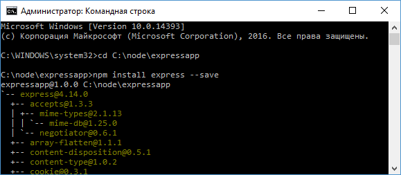

Начало работы с Express
В этой главе мы рассмотрим создание сервера с помощью фреймворка Express.
Казалось бы, зачем нам нужен дополнительный фреймворк, если мы можем воспользоваться готовым модулем http, который есть в Node.js API.
Однако Express сам использует модуль http, но вместе с тем предоставляет ряд готовых абстракций, которые упрощают создание сервера и серверной логики, в частности, обработка отправленных форм, работа с куками, CORS и т.д.
Создадим для проекта новый каталог, который назовем, к примеру, expressapp.
Для хранения информации обо всех зависимостях проекта определим в этом каталоге новый файл package.json:
{
"name": "expressapp",
"version": "1.0.0"
}
Далее перейдем к этому каталогу в командной строке/терминале и для добавления всех нужных пакетов выполним команду:
npm install express --save

Создадим в каталоге проекта новый файл app.js:
// подключение express
var express = require("express");
// создаем объект приложения
var app = express();
// определяем обработчик для маршрута "/"
app.get("/", function(request, response){
// отправляем ответ
response.send("<h2>Привет Express!</h2>");
});
// начинаем прослушивать подключения на 3000 порту
app.listen(3000);
Для использования Express в начале надо создать объект, который будет представлять приложение:
var app = express();
Для обработки запросов в Express определено ряд встроенных функций, и одной из таких является функция app.get().
Она обрабатывает GET-запросы протокола HTTP и позволяет связать маршруты с определенными обработчиками.
Для этого первым параметром передается маршрут, а вторым - обработчик, который будет вызываться, если запрос к серверу соответствует данному маршруту:
app.get("/", function(request, response){
// отправляем ответ
response.send("<h2>Привет Express!</h2>");
});
Маршрут "/" представляет корневой маршрут.
Для запуска сервера вызывается метод app.listen(), в который передается номер порта.
Запустим проект и обратимся в браузере по адресу http://localhost:3000/:

И что важно, Express опирается на систем маршрутов, поэтому все другие запросы, которые не соответствуют корневому маршруту "/", не будут обрабатываться:

Теперь изменим файл app.js:
var express = require("express");
var app = express();
app.get("/", function(request, response){
response.send("<h1>Главная страница</h1>");
});
app.get("/about", function(request, response){
response.send("<h1>О сайте</h1>");
});
app.get("/contact", function(request, response){
response.send("<h1>Контакты</h1>");
});
app.listen(3000);
Теперь в приложении определено три маршрута, которые будут обрабатываться сервером: